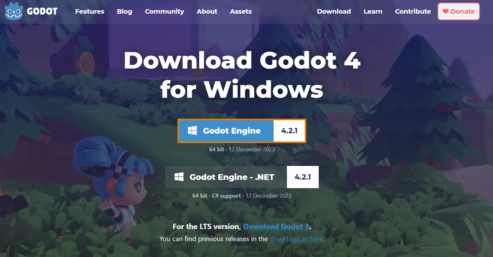
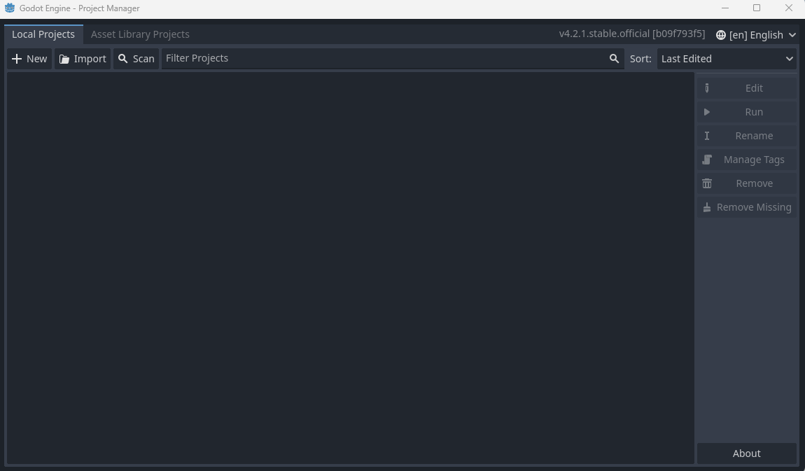
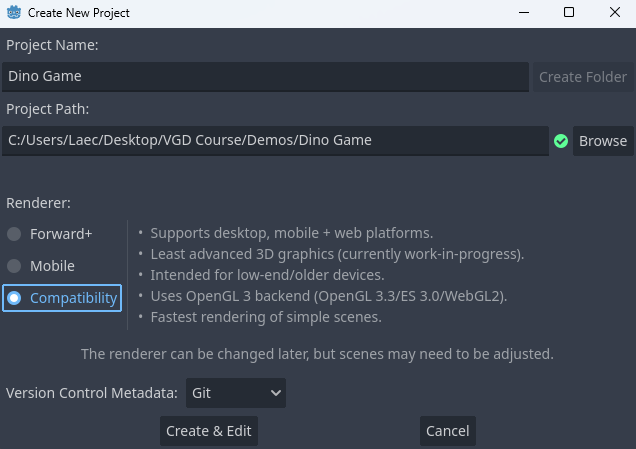

This page will get you started with a new project, as well as explore some core concepts of Godot's engine.
For a more in depth look of Godot. check out their official documentation Here
If you're taking this course in person you likely already have Godot on the computer you will be working on and can skip this step.
The Godot engine can be downloaded from their site using this Link. The site will automatically detect your computer's operating system. Once on the page, press the download button that says Godot Engine
Once the download has finished, move the file to your desktop and extract it's contents into a folder (I recommend making a new folder for this). You must make sure that both the application and the console within the file are in the same folder. After that, open up Godot and it will bring you to your project manager.
Once you have opened Godot it will bring you to the project manager. If this is your first time opening Godot, a popup will appear asking if you want to explore example projects. Press cancel on the popup and you will see your list of projects, which will likely be empty.
To create a new project press the New button at the top of the manager. A popup will appear with details for your new project.
There is a lot happening here, so lets break it down.
The project name is the name of your project (this one is pretty simple). Most of the time when you start a new project you won't have an official name yet, but it is alright to simply use a working name until you come up with something better. (You can always change the project's name in the project settings later)
This is the location that all of your project's files and assets will be stored. I usually store my active projects on my desktop for ease of access, but as long as you remember where it is, you can choose to put your project anywhere that makes sense to you. It is best practice to select an empty folder for your project, however, so the files don't get mixed up with something else.
Your renderer choice decides how the engine processes the visuals of your project. The details of rendering is far beyond the scope of this course, but for our purposes Forward+ allows the most complex graphics but least number of compatable devices, whereas Compatibility has the simplest graphic options but can work on most devices. Mobile is between those two extremes. Since we are making a simple 2D game, any would work, but I recommend Mobile or Compatability for this course.
If you want to look deeper into what the actual differences the renderer's have (and possibly develop a headache), check out Godot's documentation on them Here
This option sounds confusing, but all it does is setup a project to work with Git, a program that helps manage different versions of files and allow collaboration between different users. For this project we will not be using Git, but having the option to connect does not change the project in anyway and I consider it good practice to always leave this option on Git.
Once you are happy with your project settings, go ahead and press Create and Edit at the bottom of the popup and the editor will open.